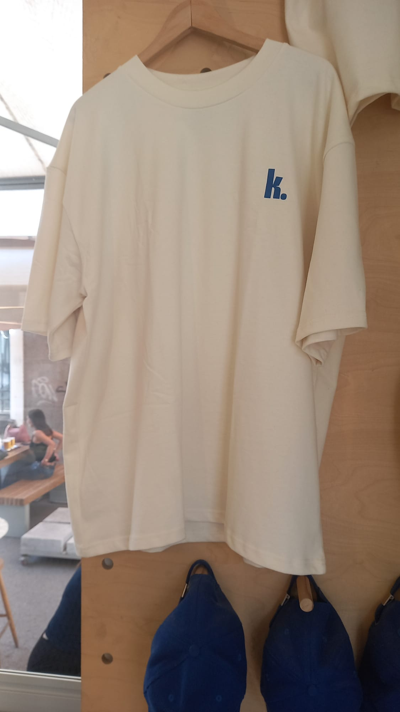
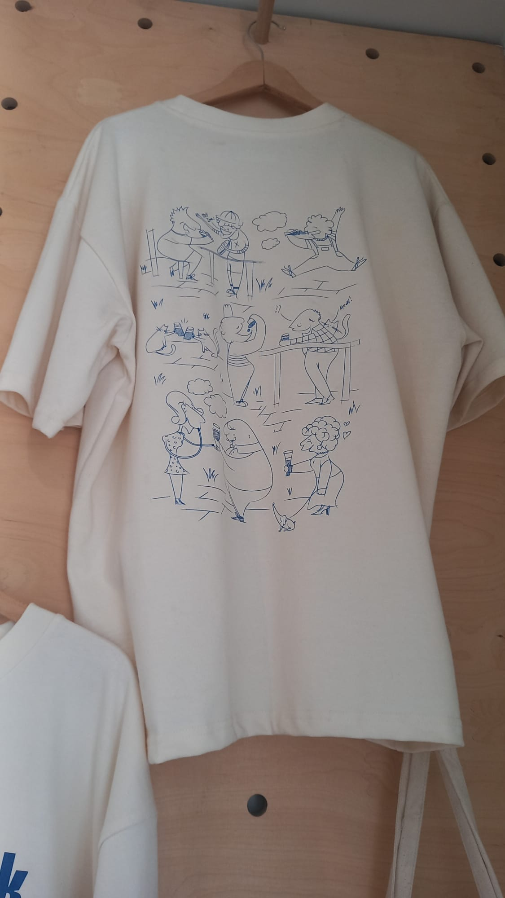
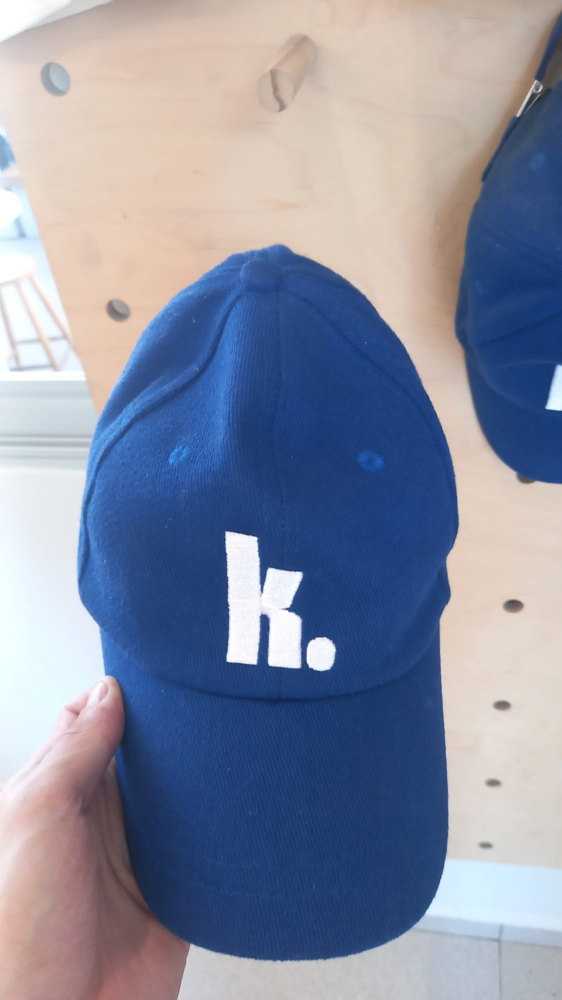
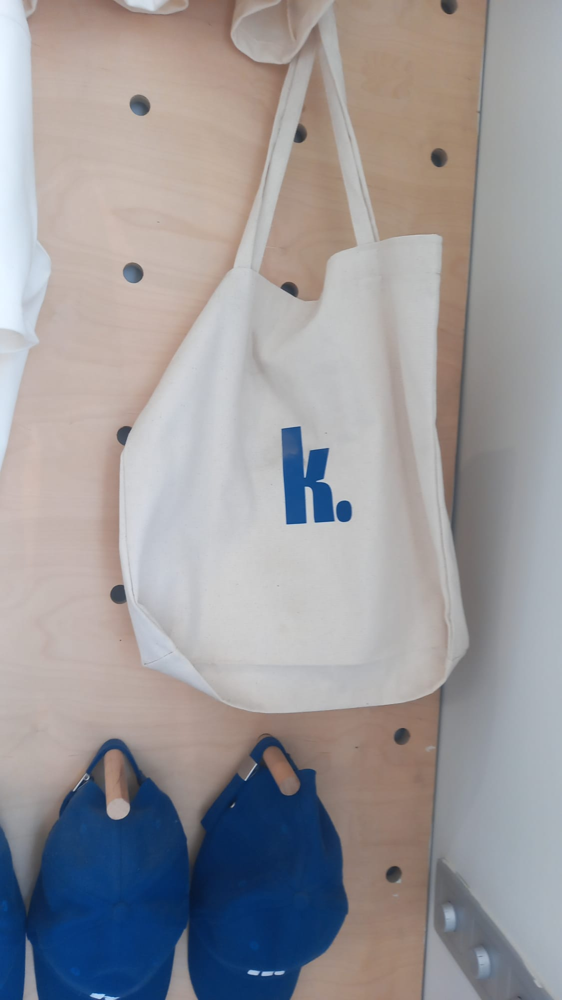

Alsancak
Bira, şarap ve hızlı atıştırmalıklar.
Fıçı ve şişe biralar, sandviçler, fritöz ürünleri, deli şişleri ve gün boyu açık kahve barı. Kokteyl bu şubenin menüsünde yer almıyor.
Alsancak menüsü ↗Alsancak · Atakent · İzmir
İki şube, iki farklı menü. Alsancak’ta self-servis sokak pub ruhu; Atakent’te bahçe, kokteyller ve daha geniş mutfak seçkisi.
Sadece Alsancak şubesinde
Kantin. giyilebilir hali
Oversize tişörtün arkasındaki karikatür serisini tasarımın merkezine aldık. Kart ilk bakışta ön yüzü gösterir; üzerine geldiğinde ya da dokunduğunda arka baskı açılır.


Ürünler

Önde nakışlı logo, arkada metal tokalı ayarlanabilir kayış.

İç cepli, sağlam saplı, çok amaçlı pamuk kanvas tote.
Bundle fırsatları
Sadece gerçekten olduğunda
Yeni bir etkinlik yayınlandığında burada otomatik olarak görünecek.
Adres net, menü net
Alsancak · Self-servis
Alsancak, Konak / İzmir
Atakent · Bahçe
Atakent, Karşıyaka / İzmir
Güncel saatler ve duyurular